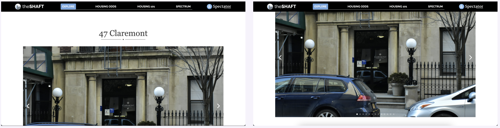
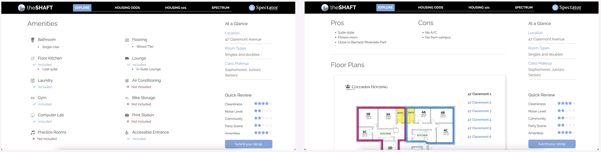

theShaft Feature Design
Position: Product Manager
Company: Spectator Publishing Company
Duration: September - December 2023
Tools: Figma, Trello
Overview
In this project, our team is dedicated to redesign the individual dorm pages for theShaft. The purpose of this website is to assist students in gaining a comprehensive understanding of the campus housing options at Columbia University. Our primary objective is to integrate a 360 room tour feature that would offer immersive and comprehensive viewing of the campus dorms, providing students with invaluable information to make informed housing decisions. Please keep in mind that this project is ongoing.
Goals & Constraints
Goals
- Increase “useful view” rate (users report they can judge a room) without slowing page load.
- Keep creation costs within non-profit student-org budget.
Constraints
- Budget insufficient for campus-wide 360 capture and hosting.
- Legacy template with fixed layout specifics.
- Volunteer production bandwidth; content must be easy to add and maintain.
Current Design
Two main things to highlight on the current page are (1) the first image that is on the screen is too big for one's screen and (2) the information on the side bar sticks to the page.
 Pain Points
We recognized that some of the pain points of the current website included:
- Inadequate view of room
- Incorrect layout sizing
- Outdated reviews
Research
In our research, we mainly focused on the first pain point.
To gain a better understanding of how to approach the redesign, we conducted a comparative analysis of other universities'
dorm websites to explore how they allowed students to view their prospective dorms. Some examples include photos with
panoramic views, real-life floor plans, videos, and interactive room tours.
These were some designs we looked at during the comparative analysis:
 After conducting a comprehensive analysis, we presented our findings to randomly sampled Columbia University students
through a short interview. This interview enabled us to ascertain the efficacy of our identified features and also to
gain valuable insights into the students' interaction patterns with other online platforms, thereby informing our
decision-making process regarding feature inclusion and exclusion.
After conducting a comprehensive analysis, we presented our findings to randomly sampled Columbia University students
through a short interview. This interview enabled us to ascertain the efficacy of our identified features and also to
gain valuable insights into the students' interaction patterns with other online platforms, thereby informing our
decision-making process regarding feature inclusion and exclusion.
The main conclusions are as follows:
- Users prefer simplistic design features that are intuitive; less is more
- Users would rather see their room in a separate, full screen tab if utilizing the 360 room tour or video
- Users prefer if we stick to one type of multimedia
- Managing board decided that although 360 room tour would be most ideal for the students, the current budget does not support it
Scope & Responsibilities
- Defined MVP against budget/time constraints; coordinated with design and media teams.
- Wrote acceptance criteria and success metrics.
- Ran user interviews; synthesized findings into the decisions above.
Design Opportunities
- Video Room Tour: Students can play a video of their choice of dorm in a separate, full screen tab to explore
spaces that photos cannot otherwise depict. The full screen tab will have a small drop down menu for users to
choose which room they would like to see.
- Layout Resizing: We will re-do some of the layout so that students can now see entire photos or features without having
to scroll. This would help the readability and comprehension of the website.
Mockup Design
As this project has already been worked on in the past, my team and I altered the existing prototype to include a new page with a video room tour as shown in the preliminary prototype. We are still exploring more prototype ideas.